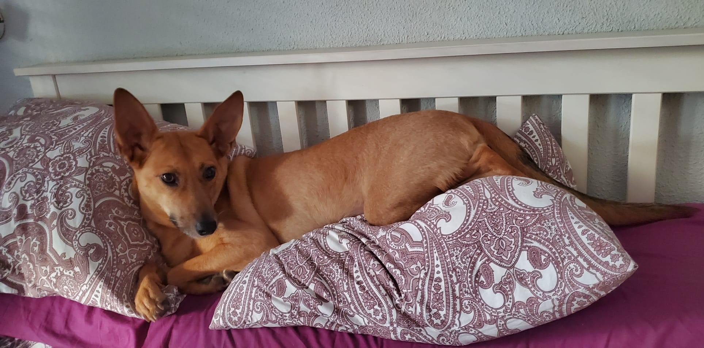
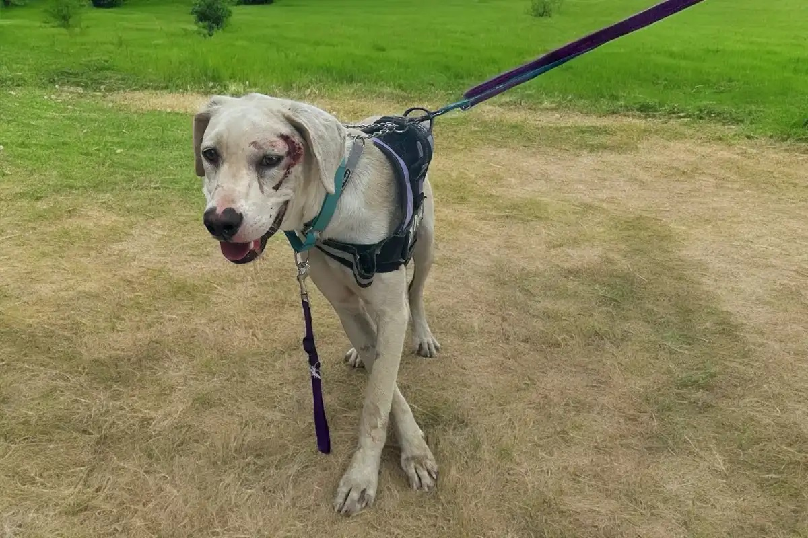
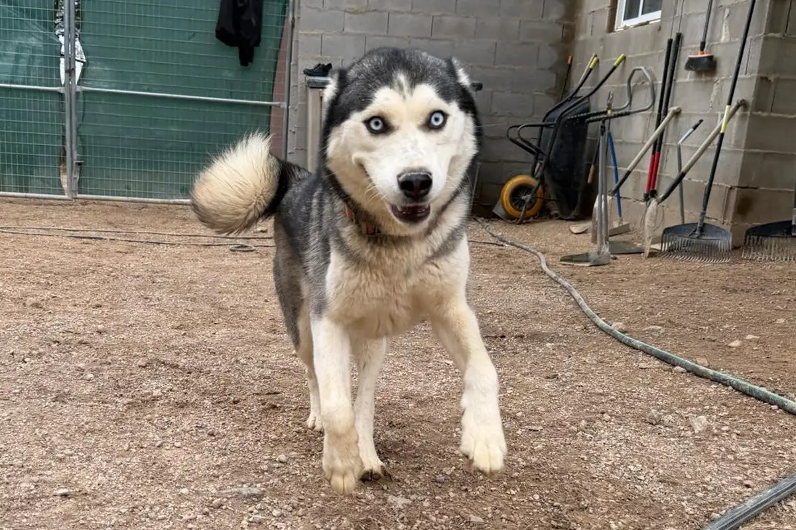
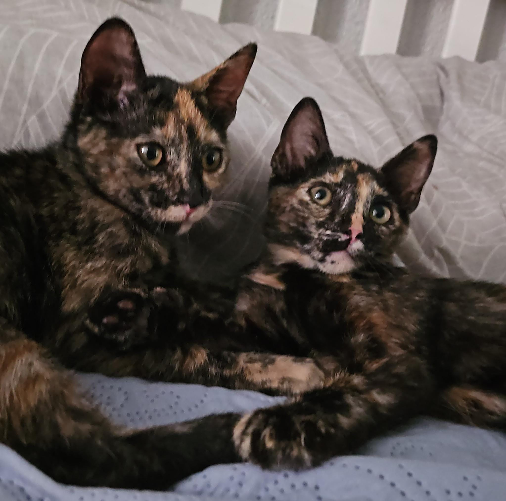
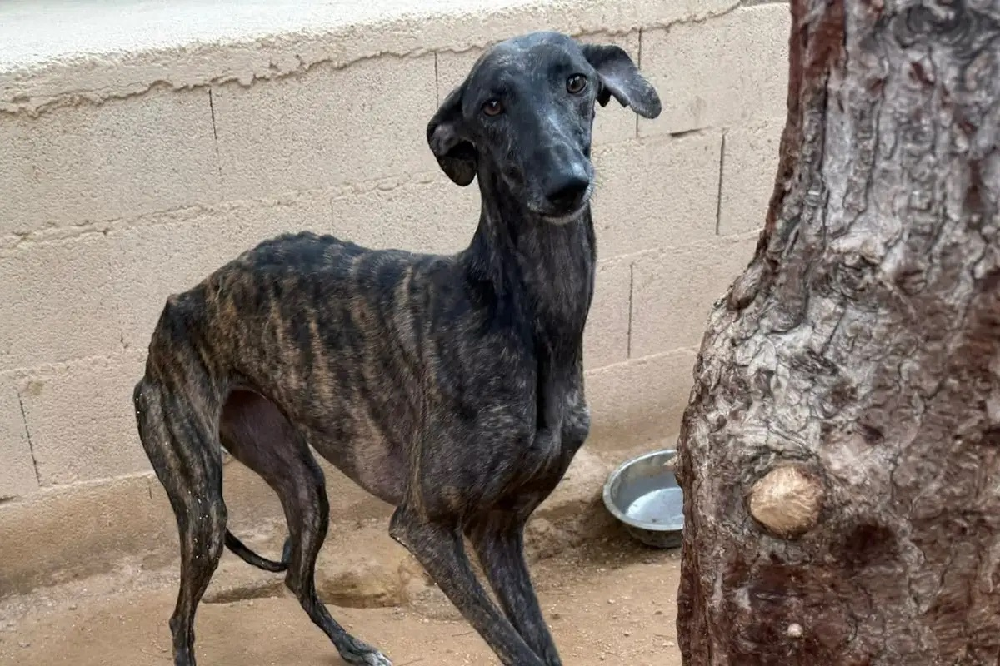
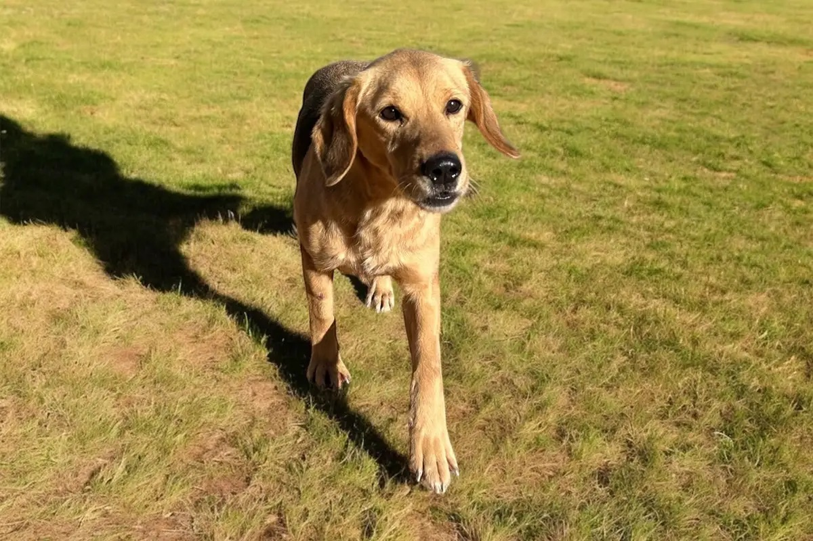
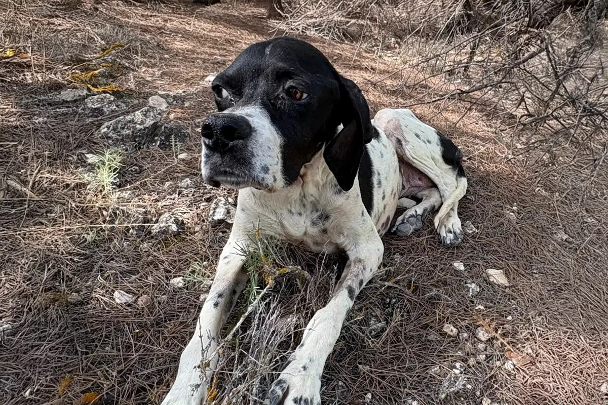
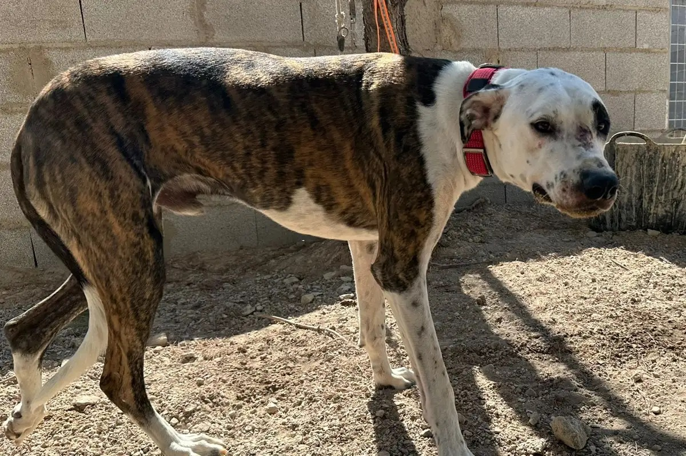
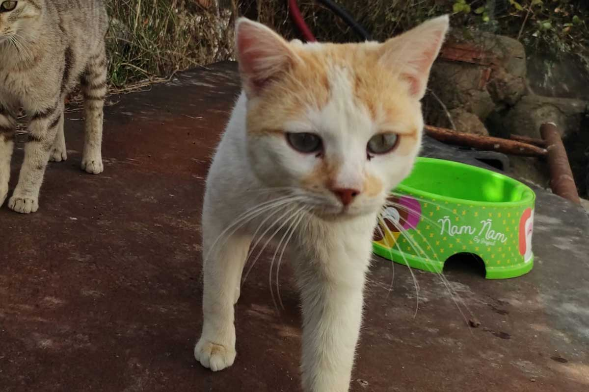

Fundación Tres Huellas AHB
Fundación Tres Huellas AHB
Apadrinar a un peludito es una forma maravillosa de contribuir al bienestar de perros y gatos que necesitan apoyo mientras esperan su hogar definitivo.
Al convertirte en padrino o madrina, estarás proporcionando recursos esenciales para su cuidado, alimentación y atención veterinaria.
Además, el apadrinamiento crea un vínculo especial entre tú y el animal que eliges apoyar. Recibirás actualizaciones periódicas sobre su progreso,
fotos y mensajes que te permitirán seguir de cerca su desarrollo y celebrar juntos cada pequeño logro.
Tu compromiso como padrino o madrina no sólo mejora la vida del animal que apadrinas, sino que también ayuda a nuestra fundación a continuar rescatando y
cuidando a más animales necesitados. Es una manera significativa de marcar la diferencia y ser parte de una comunidad dedicada al bienestar animal.
¡Anímate a apadrinar y sé el héroe que muchos animales esperan!

Hembra | 5 años | Mediana
Aura fue rescatada de una situación de abandono y maltrato (la encontraron atada a un árbol). A pesar de su pasado difícil, es una perrita dulce y cariñosa. Apadrinar a Aura significa ayudarla a recibir la atención veterinaria y el cuidado necesario mientras se recupera de sus heridas emocionales.
Quiero Apadrinar
Macho | 1 año | Mediano
Chichón es un jovencito de apenas un año que tuvo un comienzo bastante duro, encontrándolo con un golpe en la cabeza después de pasar por maltrato. Capturarlo no fue fácil porque estaba realmente asustado, pero ahora que está con nosotros en el refugio, estamos haciendo todo lo posible para ayudarlo a superar su miedo. Poco a poco, con mucho cariño y paciencia, esperamos verlo florecer y finalmente encontrar un hogar donde lo cuiden como se merece
Quiero Apadrinar
Hembra | 1'5 años | Mediana
Duki es una husky de año y medio llena de vitalidad, alegría y curiosidad. Fue encontrada en un camino de Albacete, corriendo sin rumbo, hasta que acabó en plena circunvalación entre los coches. Dos personas lograron detenerla y traerla a la tienda, donde comenzó su nueva etapa. Ahora se encuentra en proceso de adaptación al refugio, mostrando cada día su lado más cariñoso y juguetón.
Quiero Apadrinar
Hembras | 3 meses
Hela y Bastet son dos hermanas inseparables que fueron rescatadas de debajo de un coche en las calles de Sevilla. A pesar de su difícil comienzo, estas pequeñas han demostrado ser increíblemente cariñosas y juguetonas. Apadrinar a Hela y Bastet ayudaría a cubrir sus necesidades básicas y a brindarles la atención veterinaria que merecen para seguir creciendo sanas y fuertes.
Quiero Apadrinar
Hembra | 3 años | Mediana
Lila es una perrita muy asustada que vivía sola en el campo, alejándose de cualquier contacto humano. A pesar de eso, convive sin problema con otros perros y en ellos encuentra apoyo. Con nosotros mantiene distancia, observa mucho y todavía no se siente lista para acercarse. Su proceso será lento, pero respetado al máximo. Poco a poco iremos ganando su confianza, hasta que algún día decida que también quiere formar parte de nuestro equipo.
Quiero Apadrinar
Hembra | 3 años | Mediana
Lurina ya está totalmente recuperada y feliz en el refugio. Al principio llegó un poco asustada, pero con cariño y paciencia ha vuelto a sacar su lado más alegre y cariñoso. Es una panita tranquila, buena y muy agradecida, que siempre mueve la cola cuando la saludas. Le encanta pasear, disfrutar del sol y recibir mimos (muchos mimos). Ahora solo le falta lo más importante: una familia que le dé el hogar definitivo que tanto merece.
Quiero Apadrinar
Hembra | 3 años | Mediana
Misae tiene 3 años y ha vivido siempre en la sombra. Hace 8 meses rescatamos a sus cachorros, pero ella seguía escapando, escondida, desconfiada. Ahora está recuperándose de un problema en las patas traseras.
Quiero Apadrinar
Macho | 6 meses | Mediano
Fue abandonado con 4 meses en una protectora que solo aceptaba gatos, han intentado encontrarle hogar y nos llamaron para ver si podíamos ayudarles, así que lo hemos traído aquí con nosotros, es muy buen pana y aunque es un poco grande también es muy muy cariñoso
Quiero Apadrinar
Macho | 2 años
Vini es el papá adoptivo de todos los gatos que vienen aquí, les sirve como referente y maestro, fue el primero en llegar con nosotros y es básicamente un amor de gato. Es inseparable de pardo, con el cual siempre va inspeccionando todo el terreno, necesita ayuda para aplicar el ces, igual que pardo.
Quiero Apadrinar